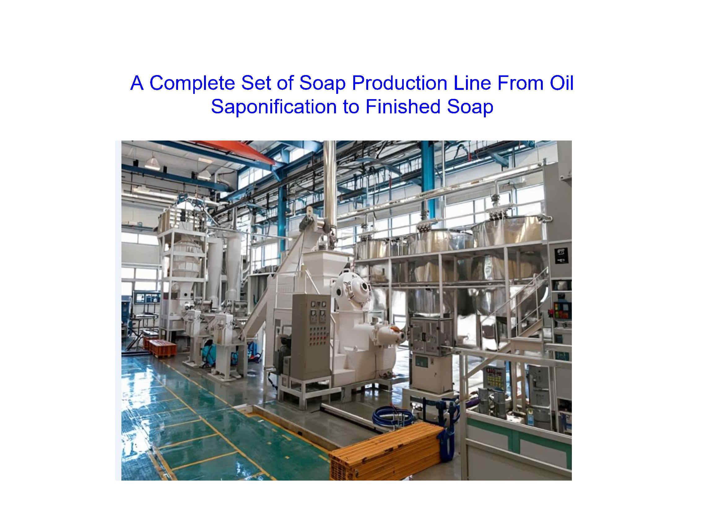
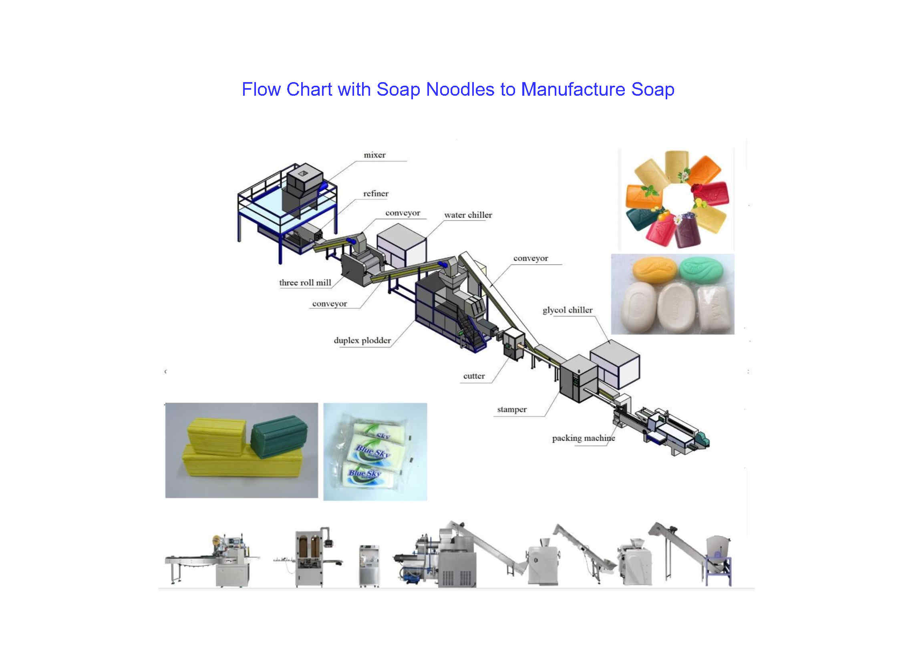
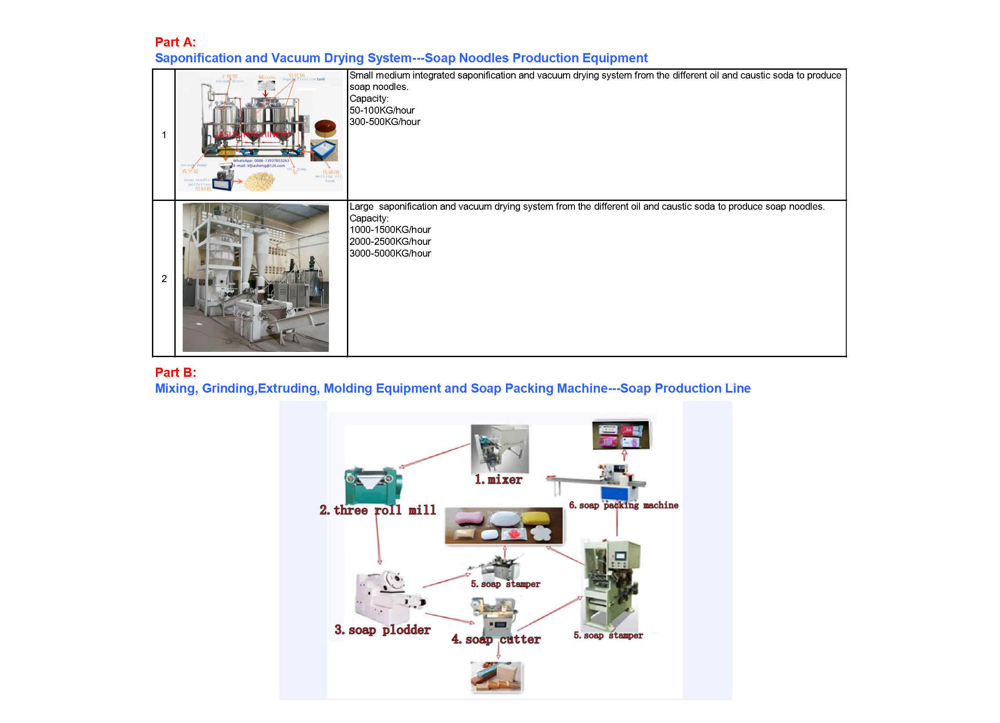
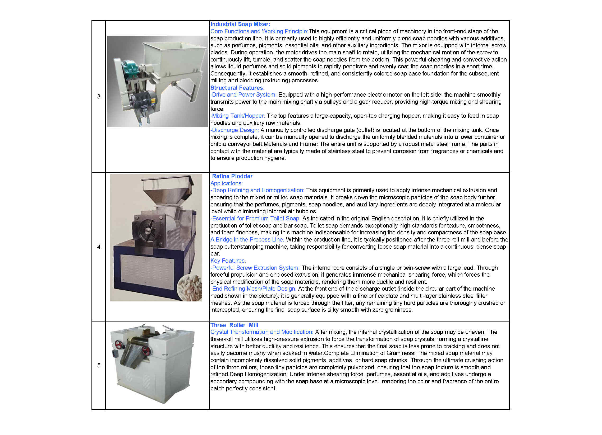
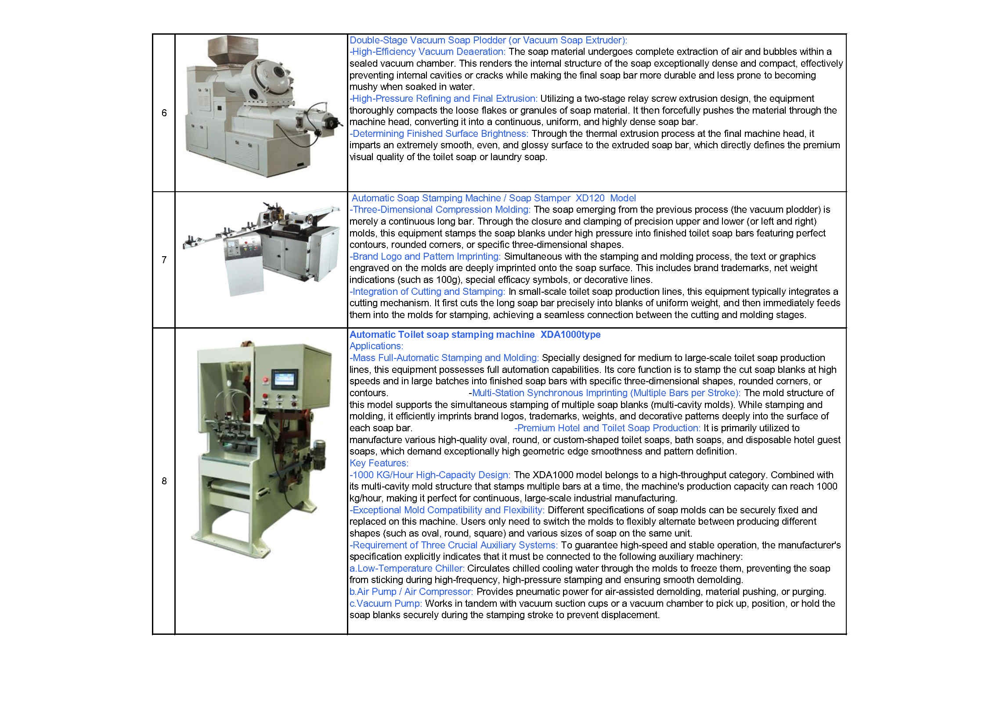
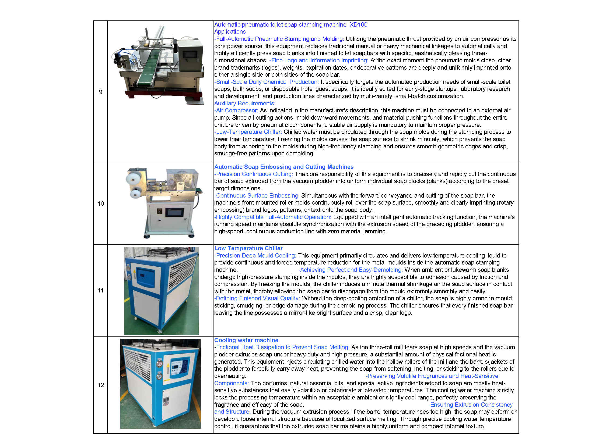
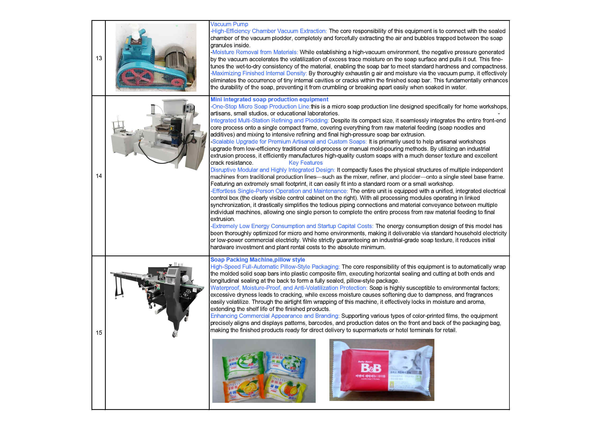

Professional Soap Making Machinery Experts
Established in 2005, Kaifeng Jasun Industry Co., Ltd. specializes in professional soap making machinery and complete production lines. With over two decades of industrial expertise, we are dedicated to providing global soap manufacturers with high-performance soap processing machineries from saponification to finished soap package. Our machines have exported to over 50 countries and district, including the developed countries like United States.
The whole industrial soap production process is divided into two major steps:
The first step (Part A) is the saponification and drying system to produce soap noodles. It involves the saponification reaction of vegetable oil / animal fats and caustic soda to form a high-quality soap base. This soap base is then efficiently processed through a vacuum drying system and a pelletizer machine, which continuously extrudes them into premium soap noodles.
The second step (Part B) is from soap noodles to produce finished soap. The soap noodles are put into a high-performance soap mixer, which perfectly blends the soap noodles with perfume, colorants, and pigments. The mixture is then fed into a refining plodder (soap refiner). Its core objective is to thoroughly blend, homogenize, and mill the soap materials. After that, the mixture goes to a three-roll mill (three-roller grinder), where the soap noodles are ground into ultra-thin soap sheets. These thin sheets are transferred via a conveyor belt to a heavy-duty duplex vacuum soap plodder machine or a single screw soap plodder machine (soap extruder), where they are refined again and continuously extruded into a long soap bar with the desired shape. Afterward, the long bar is cut and shaped into individual soap bars of the required size using an automatic soap cutting machine (soap cutter) or a soap stamping machine (soap stamper / soap printer / soap press / soap punching machine). Finally, the finished toilet soap / bath soap / hotel soap or laundry soap bars are wrapped by an advanced soap packaging machine (flow pillow soap packing machine / Horizontal Flow Wrapper, soap cartoning machine / paper soap wrapping machine).






